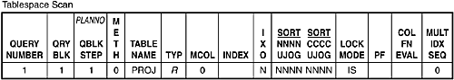
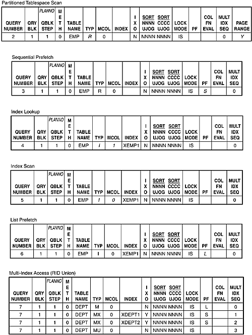
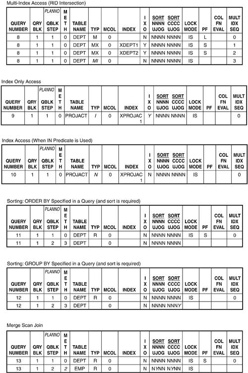
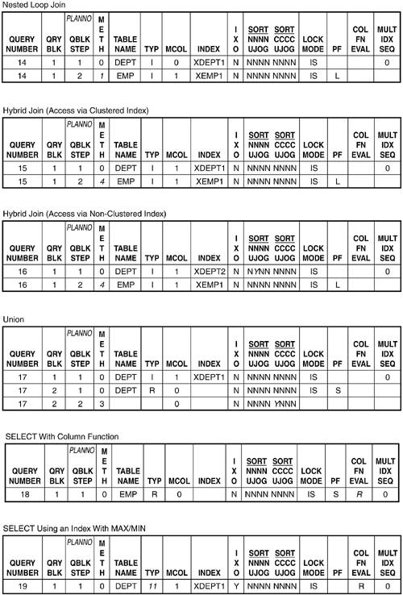
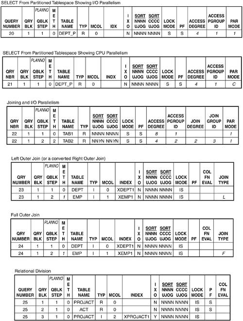
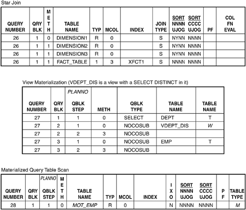

|
|
< Day Day Up > |
|
Access Paths and the PLAN_TABLEEXPLAIN populates the PLAN_TABLE with access path information. You can use the DDL in Listing 23.1 to create a PLAN_TABLE. NOTE The PLAN_TABLE will be created in the default database (DSNDB04) and STOGROUP (SYSDEFLT) in a DB2-generated table space, unless a database and a table space are created for the PLAN_TABLE and they are referenced in the IN clause of the CREATE TABLE statement. Avoid using the default database and table space. DB2 supports many different formats for the PLAN_TABLE. The other formats exist to provide support for PLAN_TABLEs built under older versions of DB2 that did not support all the current columns. In general, though, you should use all of the columns available for the version of DB2 that you are using in order to obtain as much information from EXPLAIN as possible. If a PLAN_TABLE already exists, you can use the LIKE clause of CREATE TABLE to create PLAN_TABLEs for individual users based on a master PLAN_TABLE. Having a PLAN_TABLE for the following users is a good idea:
Changes for DB2 Versions 7 and 8
Listing 23.1. DDL to Create the PLAN_TABLECREATE TABLE userid.PLAN_TABLE ( QUERYNO INTEGER NOT NULL, QBLOCKNO SMALLINT NOT NULL, APPLNAME CHAR(8) NOT NULL, PROGNAME VARCHAR(128) NOT NULL, PLANNO SMALLINT NOT NULL, METHOD SMALLINT NOT NULL, CREATOR VARCHAR(128) NOT NULL, TNAME VARCHAR(128) NOT NULL, TABNO SMALLINT NOT NULL, ACCESSTYPE CHAR(2) NOT NULL, MATCHCOLS SMALLINT NOT NULL, ACCESSCREATOR VARCHAR(128) NOT NULL, ACCESSNAME VARCHAR(128) NOT NULL, INDEXONLY CHAR(1) NOT NULL, SORTN_UNIQ CHAR(1) NOT NULL, SORTN_JOIN CHAR(1) NOT NULL, SORTN_ORDERBY CHAR(1) NOT NULL, SORTN_GROUPBY CHAR(1) NOT NULL, SORTC_UNIQ CHAR(1) NOT NULL, SORTC_JOIN CHAR(1) NOT NULL, SORTC_ORDERBY CHAR(1) NOT NULL, SORTC_GROUPBY CHAR(1) NOT NULL, TSLOCKMODE CHAR(3) NOT NULL, TIMESTAMP CHAR(16) NOT NULL, REMARKS VARCHAR(762) NOT NULL, PREFETCH CHAR(1) NOT NULL WITH DEFAULT, COLUMN_FN_EVAL CHAR(1) NOT NULL WITH DEFAULT, MIXOPSEQ SMALLINT NOT NULL WITH DEFAULT, VERSION VARCHAR(64) NOT NULL WITH DEFAULT, COLLID VARCHAR(128) NOT NULL WITH DEFAULT, ACCESS_DEGREE SMALLINT, ACCESS_PGROUP_ID SMALLINT, JOIN_DEGREE SMALLINT, JOIN_PGROUP_ID SMALLINT, SORTC_PGROUP_ID SMALLINT, SORTN_PGROUP_ID SMALLINT, PARALLELISM_MODE CHAR(1), MERGE_JOIN_COLS SMALLINT, CORRELATION_NAME VARCHAR(128), PAGE_RANGE CHAR(1) NOT NULL WITH DEFAULT, JOIN_TYPE CHAR(1) NOT NULL WITH DEFAULT, GROUP_MEMBER CHAR(8) NOT NULL WITH DEFAULT, IBM_SERVICE_DATA VARCHAR(254) NOT NULL WITH DEFAULT, WHEN_OPTIMIZE CHAR(1) NOT NULL WITH DEFAULT, QBLOCK_TYPE CHAR(6) NOT NULL WITH DEFAULT, BIND_TIME TIMESTAMP NOT NULL WITH DEFAULT, OPTHINT VARCHAR(128) NOT NULL WITH DEFAULT, HINT_USED VARCHAR(128) NOT NULL WITH DEFAULT, PRIMARY_ACCESSTYPE CHAR(1) NOT NULL WITH DEFAULT, PARENT_QBLOCK SMALLINT NOT NULL WITH DEFAULT, TABLE_TYPE CHAR(1), TABLE_ENCODE CHAR(1) NOT NULL WITH DEFAULT, TABLE_SCCSID SMALLINT NOT NULL WITH DEFAULT, TABLE_MCCSID SMALLINT NOT NULL WITH DEFAULT, TABLE_DCCSID SMALLINT NOT NULL WITH DEFAULT, ROUTINE_ID INTEGER NOT NULL WITH DEFAULT ) IN database.tablespace;
The final V8 modification is to the REMARKS column, which was extended from VARCHAR(254) to VARCHAR(762). Querying the PLAN_TABLEAfter you issue the EXPLAIN command on your SQL statements, the next logical step is to inspect the results. Because EXPLAIN places the access path information in a DB2 table, you can use an SQL query to retrieve this information, as follows:
SELECT QUERYNO, QBLOCKNO, QBLOCK_TYPE, APPLNAME, PROGNAME, PLANNO,
METHOD, CREATOR, TNAME, TABNO, ACCESSTYPE, JOIN_TYPE, MATCHCOLS,
ACCESSNAME, INDEXONLY, SORTN_PGROUP_ID, SORTN_UNIQ, SORTN_JOIN,
SORTN_ORDERBY, SORTN_GROUPBY, SORTC_PGROUP_ID, SORTC_UNIQ,
SORTC_JOIN, SORTC_ORDERBY, SORTC_GROUPBY, TSLOCKMODE, TIMESTAMP,
PREFETCH, COLUMN_FN_EVAL, MIXOPSEQ, COLLID, VERSION, \
ACCESS_DEGREE, ACCESS_PGROUP_ID, JOIN_DEGREE, JOIN_PGROUP_ID,
PARALLELISM_MODE, MERGE_JOIN_COLS, CORRELATION_NAME,
PAGE_RANGE, GROUP_MEMBER, WHEN_OPTIMIZE, BIND_TIME, HINT_USED,
PRIMARY_ACCESSTYPE, PARENT_QBLOCK, TABLE_TYPE, TABLE_ENCODE,
TABLE_SCCSID, TABLE_MCCSID, TABLE_DCCSID, ROUTINE_ID
FROM ownerid.PLAN_TABLE
ORDER BY APPLNAME, COLLID, VERSION, PROGNAME, TIMESTAMP DESC,
QUERYNO, QBLOCKNO, PLANNO, MIXOPSEQ;
A common method of retrieving access path data from the PLAN_TABLE is to use QMF or a GUI-based query tool to format the results of a simple SELECT statement. This way, you can organize and display the results of the query in a consistent and manageable fashion. It is crucial that the TIMESTAMP column be in descending order. Because EXPLAINs are executed as a result of the BIND command, access path data is added to the PLAN_TABLE with a different timestamp. The old data is not purged from the PLAN_TABLE each time an EXPLAIN is performed. If you specify the descending sort option on the TIMESTAMP column, you can ensure that the EXPLAIN data in the report is sorted in order from the most recent to the oldest access path for each SQL statement in the PLAN_TABLE. Sorting this way is important if the PLAN_TABLEs you are working with are not purged. If you want to retrieve information placed in the PLAN_TABLE for a single SQL statement, you can issue the following query:
SELECT QUERYNO, QBLOCKNO, QBLOCK_TYPE, PLANNO, METHOD, TNAME,
ACCESSTYPE, JOIN_TYPE, MATCHCOLS, ACCESSNAME, INDEXONLY,
SORTN_PGROUP_ID, SORTN_UNIQ, SORTN_JOIN, SORTN_ORDERBY,
SORTN_GROUPBY, SORTC_PGROUP_ID, SORTC_UNIQ, SORTC_JOIN,
SORTC_ORDERBY, SORTC_GROUPBY, TSLOCKMODE, PREFETCH,
COLUMN_FN_EVAL, MIXOPSEQ, ACCESS_DEGREE, ACCESS_PGROUP_ID,
JOIN_DEGREE, JOIN_PGROUP_ID, PARALLELISM_MODE,
MERGE_JOIN_COLS, CORRELATION_NAME, PAGE_RANGE, GROUP_MEMBER,
WHEN_OPTIMIZE, BIND_TIME, HINT_USED, PRIMARY_ACCESSTYPE,
PARENT_QBLOCK, TABLE_TYPE, TABLE_ENCODE, TABLE_SCCSID,
TABLE_MCCSID, TABLE_DCCSID, ROUTINE_ID
FROM ownerid.PLAN_TABLE
ORDER BY QUERYNO, QBLOCKNO, PLANNO, MIXOPSEQ;
The preceding eliminates from the query the package and plan information, as well as the name of the table creator. Throughout the remainder of this chapter, I present PLAN_TABLE information for several types of SQL statements. Variants of this query are used to show the PLAN_TABLE data for each EXPLAIN statement. The PLAN_TABLE ColumnsNow that you have some basic PLAN_TABLE queries to assist you with DB2 performance monitoring, you can begin to EXPLAIN your application's SQL statements and analyze their access paths. But remember, because the access path information in the PLAN_TABLE is encoded, you must have a type of decoder to understand this information. This information is provided in Table 25.1. A description of every column of the PLAN_TABLE is provided. Recall from Chapter 20, "DB2 Behind the Scenes," the access strategies that DB2 can choose in determining the access path for a query. Understanding how these access path strategies relate to the PLAN_TABLE columns is useful. The following sections provide a synopsis of the strategies and how to recognize them based on particular PLAN_TABLE columns. The specific type of operation to which the PLAN_TABLE row applies is recorded in the QBLOCK_TYPE column. This column, in conjunction with the ACCESSTYPE column, can be used to identify the specific operations taken to satisfy each portion of the query. Table space scans are indicated by ACCESSTYPE being set to R. For a partitioned table space scan in which specific partitions can be skipped, ACCESSTYPE is set to R and PAGE_RANGE is set to Y. Index scans are indicated by ACCESSTYPE being set to any other value except a space. When PREFETCH is set to S, sequential prefetch can be used; when it is set to L, list prefetch can be used. Even if the PREFETCH column is not set to L or S, however, prefetch can still be used at execution time. Whether sequential detection is used cannot be determined from the PLAN_TABLE because it is specified for use only at execution time. If an index is used to access data, it is identified by creator and name in the ACCESSCREATOR and ACCESSNAME columns. A direct index lookup cannot be determined from the PLAN_TABLE alone. In general, a direct index lookup is indicated when the MATCHCOLS column equals the same number of columns in the index and the index is unique. For a non-unique index, this same PLAN_TABLE row can indicate a matching index scan. This additional information must be retrieved from the DB2 Catalog. A non-matching index scan is indicated when the MATCHCOLS=0. The INDEXONLY column is set to Y for index-only access, or to N when the table space data pages must be accessed in addition to the index information. Index screening cannot be determined by looking at the PLAN_TABLE data, but if MATCHCOLS is less than the number of columns in the index key index screening is possible. A one-fetch index access is used when ACCESSTYPE equals I1. This type of access is used when a single row can be used to resolve a MIN or MAX function. And, multiple-index access can be determined by the existence of M, MX, MI, or MU in the ACCESSTYPE column. Clustered and non-clustered index access cannot be determined using the PLAN_TABLE. You will need to query the DB2 Catalog to determine whether each index is clustered. Also, index lookaside is generally available when DB2 indexes are used (but is not shown in the PLAN_TABLE). A parallel query is indicated by values in ACCESS_DEGREE indicating the number of parallel streams to be invoked. It is the number of parallel tasks that BIND deems optimal. The degree can be decreased at runtime. The type of parallelism (I/O, CPU, or Sysplex) is recorded in the PARALLELISM_MODE column. Parallel tasks are grouped into parallel groups as indicated by the value(s) in ACCESS_PGROUP_ID. JOIN_DEGREE and JOIN_PGROUP_ID are populated when tables are joined in parallel. For the different join methods, the METHOD column is set to 1 for a nested loop join, 2 for a merge scan join, or 4 for a hybrid join. If the METHOD column is 3, it indicates a sort operation on data from a previous step. Now that you know what to look for, you can examine some sample access paths. Sample Access PathsThe primary objective of EXPLAIN is to provide a means by which an analyst can "see" the access paths chosen by DB2. This section provides some EXPLAIN examples showing the SQL statement, rows from a PLAN_TABLE that were the result of an EXPLAIN being run for that SQL statement, and an analysis of the output. Based on the results of the EXPLAIN, you might decide that a better access path is available for that SQL statement. This process involves tuning, which is discussed in Part V, "DB2 Performance Tuning." This section concentrates solely on showing the EXPLAIN results for different types of accesses. PLAN_TABLE rows for various types of accesses follow. You can use them as a guide to recognizing access path strategies in the PLAN_TABLE. Italicized column data is unique to the access path strategy being demonstrated. (For example, in the first row shown, the R in the TYP column is italicized, indicating that a table space scan is used.)       |
|
|
< Day Day Up > |
|